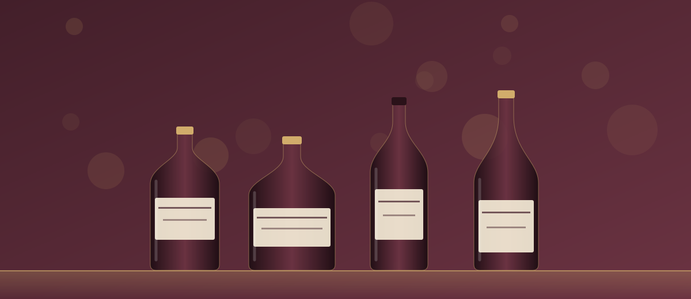

Room Alco

- График работы
- круглосуточно (заявлено)
- Адрес
- Москва, ул. Маршала Катукова, 24к6
- Сайт
- room-alco.ru
Сильный сервис при слабой доказательной базе: на Яндекс Картах и 2ГИС заметных отзывов не нашлось.
Чем хороша. Компания прямо заявляет, что работает круглосуточно, и предлагает больше, чем большинство конкурентов: квиз-калькулятор для предварительной оценки, хранение бутылок в холодильных шкафах, выкуп коробок и пустых декантеров, оплату в том числе криптовалютой. Для каждой категории есть отдельная страница, так что нужный напиток легко найти. Если бутылку хочется сдать вечером или оставить партию на хранение, выбор здесь действительно шире, чем у других.
Что смущает. Ни одной цены на сайте нет: в карточках вместо сумм пустые поля «р. р.». Оценка занимает около получаса, а у части конкурентов заявлено 5–15 минут. Сайт выглядит недоделанным: у акции стоят разные даты («до 5 сентября 2026» и «до 5 сентября 2025»), в шапке осталась заглушка +7 999 999-99-99, внизу копирайт «2016–2025», а страница коньяка озаглавлена как «элитный ром». Цифры «236 бутылок за май» и «97% выкупа» — слова самой компании, подтверждений нет. Часть текстов совпадает с другими сайтами, и доверия это не добавляет.
Итог. Подойдёт, если вам важны круглосуточная работа и хранение. Если хочется заранее понять сумму — нет. Пока нет кейсов и отзывов на картах, это скорее красивый сайт с мессенджером, чем проверенный оператор.